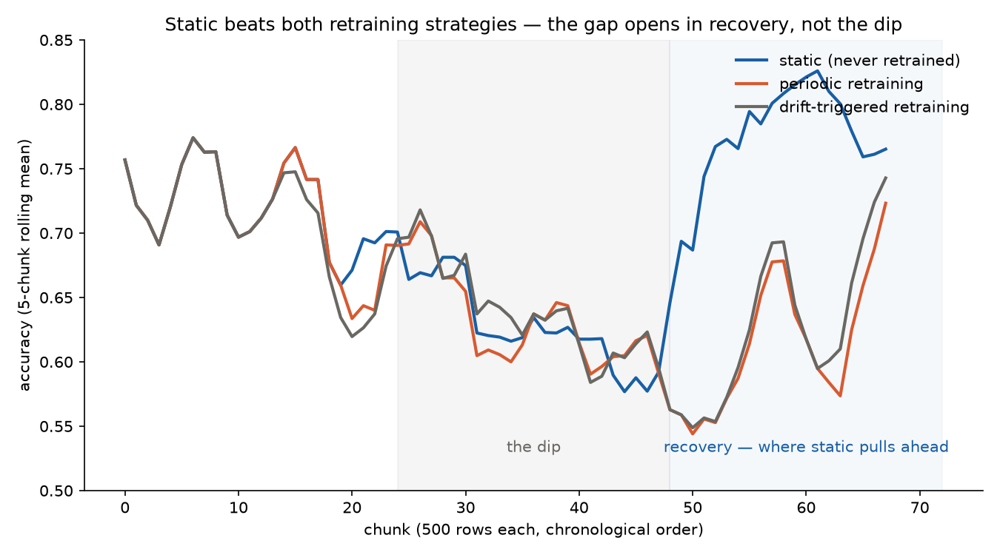

Machine learning applied to quantum computing.
Short version: on real streaming market data with a real, documented reason to drift, a model that's never retrained beats both a naive periodic-retraining policy and an automatic drift-triggered one. Not because retraining is useless - during the actual drift event, all three are statistically tied. The entire gap opens afterward, once the market partially reverts to its earlier pattern, and the retrained models are the ones that lose by not seeing it coming.
ELEC2, the Australian New South Wales electricity market dataset (Harries, 1999), the standard real benchmark in the concept-drift literature - 45,312 real half-hourly records, May 1996 to December 1998, predicting whether price will move up or down relative to a moving average. It has a genuine, well-documented reason to drift: the market was structurally expanded to include adjacent regions during the recording period. Split chronologically, not randomly, since shuffling would erase the exact thing this project is about: train on the earliest 20%, "deploy" the rest as a simulated live stream in real time order.
A fixed model evaluated across that stream shows real, substantial instability - accuracy swinging from 0.57 to 0.83 across 2,000-row windows - but not the clean "steady decline" story a drift-monitoring writeup usually reaches for. It dips hard through the middle of the stream, then partially recovers toward the end. That shape turns out to matter more than anything else in this project.
A statistical test comparing feature distributions (Population Stability Index, and the Kolmogorov-Smirnov test as a second check) can tell you the inputs have shifted. It cannot tell you whether the relationship between inputs and outcome has changed - that needs a different kind of detector, one watching the model's live accuracy directly. This project uses both: PSI/KS on the five market features, and ADWIN (Bifet & Gavaldà, 2007, via the `river` library) tracking prediction correctness for a real change point.
Both found real bugs when tested against the real data, not just synthetic cases. Three of the five features are exactly constant in the earliest slice of training data - Victoria's connection to the market likely wasn't active yet, which is itself consistent with why this dataset drifts at all. Quantile-based PSI can't define bins on zero-variance data, and the naive formula silently evaluated to 0.0 for those three features: "confirmed no drift," for what's actually the most dramatic drift PSI could ever be asked to describe, a feature going from constant to variable. Fixed to return an explicit "undefined" and fall back to the KS-test, with a regression test so it can't quietly come back. The concept-drift monitor had its own smaller bug - a reset that cleared the detector's history but not its internal sample counter - caught by a direct test before it reached anything real.
Three policies run over the identical chronological stream, in identical 500-row chunks, so the comparison is direct rather than three separate experiments compared after the fact:
Retraining and promotion both happen inside a single recent window, never looking ahead of the pipeline's current position: a candidate model trains on the first 80% of the most recent 4,000 labelled rows and only replaces the current model if it beats it on the held-out last 20% of that same window. That check does real work - periodic rejects 9 of 18 retrain attempts, drift-triggered rejects 19 of 36 - it isn't rubber-stamping every candidate.
| policy | overall accuracy | retrain attempts | promoted |
|---|---|---|---|
| static | 0.7079 | 0 | - |
| periodic | 0.6627 | 18 | 9 |
| drift-triggered | 0.6667 | 36 | 17 |
Static wins outright, and drift-triggered only narrowly beats naive periodic retraining - not the result the project was built to show. Segmenting by stream third makes the reason visible in a way the headline numbers hide:

All three tied during the dip (shaded). The entire gap opens in recovery, where static pulls away and both retraining strategies actually get worse.
| segment | static | periodic | drift-triggered |
|---|---|---|---|
| first third | 0.7239 | 0.7239 | 0.7171 |
| mid third (the dip) | 0.6418 | 0.6413 | 0.6492 |
| last third (recovery) | 0.7582 | 0.6230 | 0.6338 |
All three are effectively tied during the dip itself - retraining doesn't even help track the regime change while it's actually happening. The whole gap is in the recovery segment: static improves on its own first-third number, while both retraining policies get worse than they were during the drift they were reacting to. The mechanism: fitting new models on recent windows during the dip pulls both retrained pipelines toward the anomalous middle-period relationship between features and price movement. When the market partially reverts afterward, those adapted models are calibrated to a regime that's already passed, while the static model - never pulled away from the original pattern - turns out to still fit where the market ends up.
Not that drift detection doesn't work - both detectors correctly identify real drift when it happens, checked directly against real data, not assumed from the algorithm's reputation. The finding is narrower and more useful: automatically retraining in response to detected drift is the right move when drift is persistent or directional, and actively counterproductive when drift is transient or mean-reverting, because a model that chases the most recent regime has no mechanism to notice when that regime has already ended. "Better than the outgoing model on a recent holdout" and "well-suited to where the data is heading" turned out to be different questions, and the evaluation check built into this pipeline can only ever answer the first one. A system built on data shaped like this would want drift detection to trigger a review, not an automatic promotion.
Code, every script, and the full per-segment results: github.com/Bauxitiego/drift-monitor.